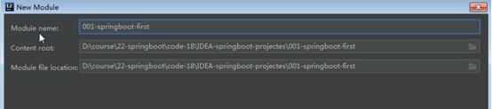

SpringBoot框架学习
SpringBoot介绍
Springboot的目的在于创建和启动细你的基于spring框架的项目。Springboot会选择最合适的spring子项目和第三方开源库进行整合。
大部分springboot应用只需要非常少的配置就可以快速运行起来。
Springboot是伴随spring4.0诞生的。
Springboot提了一种快速使用spring的方式
Springboot特点
特点：
1.为基于spring的开发体哦国内更快的入门体验
2.创建可以独立运行的spring应用
3.直接嵌入Tomcat或Jetty服务器，不需要打包成War文件
4.提供推荐的基础POM文件（starter）来简化Apache Maven配置
5.尽可能的根据项目依赖来自动配置spring框架
6.提供可以直接在生产环境中使用的功能，如性能指标、因公用信息和应用健康检查
7.开箱即用，没有代码生成，也无需XML配置。同事也可以修改默认值来满足特定的需求。
8.其他大量的项目都是基于springboot之上的，如springcloud。
优点：
Springboot使编码、配置、部署、监控变得简单。
缺点：
1.依赖太多，随便的一个Springboot应用都有好几十兆
2.缺少服务的注册和发现等解决方案
3.缺少监控集成方案、安全管理方案
4.中文的文档和资料太少且不够深入
Springboot应用场景：
1.Spring能够应用的场景
2.Java web应用
3.微服务
适合人群：
Java开发人员，对Spring、Springboot有兴趣的人员，想进一步深入了解Spring、Spring boot的人员
Maven基础、Maven命令
1.Clean
clean是maven工程的清理命令，执行clean会删除target目录及其目录下所有内容
2.Compile
compile是maven工程的编译命令，作用是将src/main/java下的Java源文件编译为class文件并输出到target下的classes目录下。
cmd进入命令状态，执行mvn compile
3.Test
test是maven工程的测试命令 mvn test，会执行src/test/java下的单元测试类。
cmd执行mvn test 执行src/test/java下单元测试类
4.Package
Package是maven工程的打包命令，对于java工程执行package打成jar包，对于web工程打成war包。
工程目录下执行mvn package
5.Install
Install是maven工程的安装命令，执行install将maven打成jar包或war包发布到本地仓库
从运行命令可以看出；当后面的命令执行时，前面的操作过程也都会自动执行。
6.三套生命周期
Maven对于项目构建过程会分为三套相互独立的生命周期，请注意这里说的是“三套”，而且“相互独立”，者三套生命周期分别是：
1.clean Lifecycle ：在进行真正的构建之前进行一些清理工作。
2.Default Lifecycle ：构建的核心部分：编译、测试、打包、部署等等。
3.Site Lifecycle ： 生成项目报告、站点、发布站点。
每一个阶段都有一个对应的命令，且有相应的插件来支持命令的运行。
注意：属于同一个指令周期内的指令，当后面的命令执行时，前面的命令会自动执行。
创建项目
第1步
第2步
第3步
第4步
第5步
目录结构中的pom.xml文件
POM是项目对象模型(Project Object Model)的简称,它是Maven项目中的文件，使用XML表示，名称叫做pom.xml。
作用类似ant的build.xml文件，功能更强大。该文件用于管理：源代码、配置文件、开发者的信息和角色、问题追踪系统、
组织信息、项目授权、项目的url、项目的依赖关系等等。事实上，在Maven世界中，project可以什么都没有，甚至没有代码，
但是必须包含pom.xml文件。
未完待续~~~